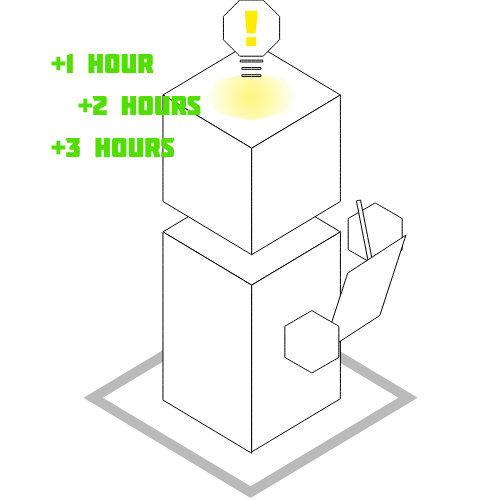

<div class="container-fluid">
    <div class="row">
        <div class="col-md-4">
            
        </div>
        <div class="col-md-8">
            <h1>Apply to be a volunteer!</h1>
            <p>We welcome all high school students everywhere to volunteer with us today! If you're interested in changing lives through academic choice, it takes just a minute to sign up as a volunteer. Volunteer hours* are awarded corresponding to contribution; there are no expectations, please volunteer in a way that is most comfortable with you. A couple volunteering options currently available include journalism within schools and academic institutions, as well as writing and analysis on the changing academic environment. Additionally, if you're interested in leadership and professional development (wow, you're proactive!) applications for such positions within the nonprofit can be found on your profile after registering as a volunteer. 
                <br><br>
                *Helivox is a 501(c)(3) certifed nonprofit organization, and can certify a variety of nonprofit hours, including national organizations like PVSA, or local organizations given that Helivox meets corresponding requirements as a certifying organization.</p>
            <button class="button"><a href="https://docs.google.com/forms/d/e/1FAIpQLSeu51AYWsMTUBepeamZQRbXDdq_S6gL3Jkr7k-cdNi5hiVj7A/viewform" target="_blank">Apply!</a></button>
        </div>
    </div>
</div>